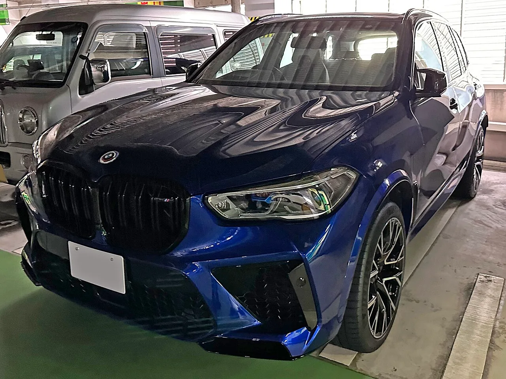
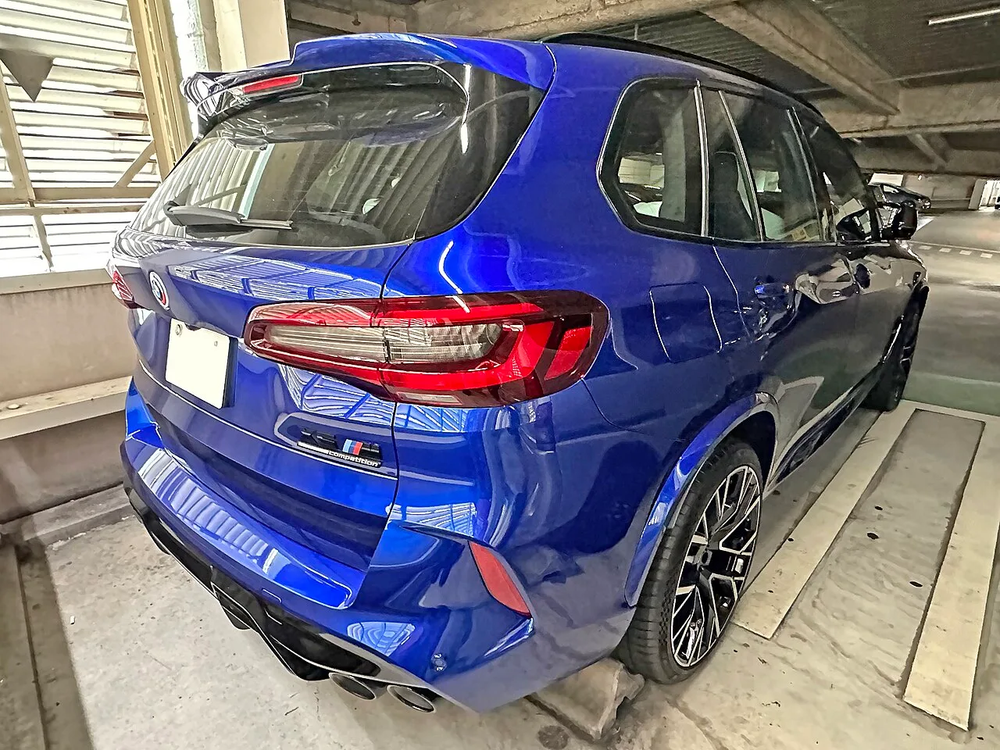
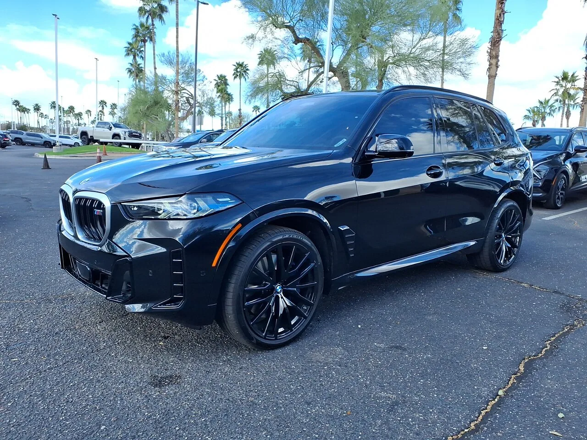

▲ 현행 내연기관 X5 M 컴페티션. 전기 버전 iX5 M이 그 뒤를 잇는다
BMW가 iX5의 M 버전을 개발 중입니다. 위장막을 두른 프로토타입이 뉘르부르크링에서 테스트 중인 모습으로 포착됐습니다.
거론되는 숫자는 만만치 않습니다. 모터 4개에 800~900마력, 상위 사양은 1,000마력을 넘길 것이라는 관측입니다.
다만 먼저 분명히 해둘 것이 있습니다. 이 출력 수치는 전부 예상치이고 BMW가 공식 발표한 바가 없습니다. 확인된 사실과 추정을 나눠 정리하겠습니다.
1. 확인된 것 — 어디까지가 사실인가
현재까지 확인된 사실은 제한적입니다.
①뉘르부르크링에서 테스트 중입니다. 내구·성능 검증 단계로 보입니다. ②위장막을 두른 프로토타입이 7월 유럽에서 포착됐습니다. ③공개는 2027년 말, 대부분 지역 판매는 2028년 초로 예상됩니다.
외관에서 읽히는 변경점도 몇 가지 있습니다. 키드니 그릴이 재설계됐고, 앞뒤 범퍼가 바뀌었으며, 공력용 립 스포일러가 붙었습니다. 냉각 계통도 손봤습니다.
고성능 전기차에서 냉각 개선은 중요한 신호입니다. 반복 고부하 주행에서 출력을 유지하려면 배터리와 모터 냉각이 관건이기 때문입니다. 뉘르에서 테스트하는 이유도 여기에 있습니다.
2. 추정 — 모터 4개와 800~900마력
여기서부터는 확정되지 않은 영역입니다.
거론되는 구성은 모터 4개입니다. 바퀴마다 하나씩 두는 방식으로, 출력은 초기 모델 기준 800~900마력대로 관측됩니다. 이후 1,000마력을 넘기는 상위 사양이 나올 가능성도 언급됩니다.
참고로 현행 내연기관 X5 M 컴페티션이 600마력대입니다. 800~900마력이면 그보다 200~300마력 위입니다.
다시 강조하면 이 숫자는 BMW가 발표한 값이 아닙니다. 프로토타입 관찰과 업계 관측에 기반한 추정입니다.

▲ 현행 X5 M 컴페티션. 전기 버전은 이보다 200마력 이상 높을 것으로 관측된다
3. 진짜 핵심은 출력이 아니라 토크 벡터링
이 차에서 실제로 중요한 대목은 마력이 아닐 수 있습니다. 네 바퀴를 개별 제어하는 토크 벡터링입니다.
내연기관 차는 엔진 하나의 힘을 디퍼렌셜과 클러치로 나눠 보냅니다. 배분에 물리적 한계와 지연이 있습니다.
모터를 바퀴마다 두면 이야기가 달라집니다. 각 바퀴의 구동력을 독립적으로, 밀리초 단위로 조절할 수 있습니다. 코너 진입에서 안쪽 바퀴 힘을 줄이고 바깥쪽을 밀어주는 식의 제어가 가능합니다.
Carscoops는 이 시스템 덕분에 전기 iX5 M이 새 내연기관 X5 M조차 따라오기 어려운 코너링을 보여줄 수 있다고 전했습니다. 2.5톤에 가까울 SUV가 무게를 상쇄하는 방법이기도 합니다.
4. '하트 오브 조이'가 공유된다는 의미
이 토크 벡터링을 돌리는 것이 '하트 오브 조이(Heart of Joy)'라 불리는 소프트웨어·전자 아키텍처입니다. 전기 M3와 공유할 것으로 알려졌습니다.
이 구조의 요점은 구동·제동·회생제동·스티어링 제어를 하나의 유닛에서 통합 처리한다는 데 있습니다. 기존에는 각각 다른 컨트롤러가 담당하고 서로 신호를 주고받는 방식이라 지연이 생겼습니다.
통합하면 제어 주기가 짧아지고 반응이 일관됩니다. 고성능 전기차에서 이 차이는 체감으로 이어집니다.
BMW가 M 브랜드의 전동화를 준비하며 모터 4개짜리 전기 M 콘셉트를 별도로 공개했다는 점도 함께 보면 방향이 분명합니다.

▲ 내연기관 X5 M도 함께 개발 중이다. 두 갈래를 병행하는 전략이다
5. 내연기관 X5 M도 같이 나온다
놓치기 쉬운 대목이 있습니다. BMW는 전기 iX5 M과 별개로 내연기관 X5 M도 함께 개발 중입니다.
즉 전환이 아니라 병행입니다. 같은 체급의 고성능 SUV를 두 가지 파워트레인으로 동시에 내놓겠다는 뜻입니다.
이는 최근 시장 상황과 무관하지 않습니다. 고성능 전기차 수요가 예상만큼 빠르게 늘지 않고 있고, 브랜드들이 내연기관 고성능 모델을 예상보다 오래 유지하는 쪽으로 방향을 틀고 있습니다.
앞서 iX5 자체가 충전 22분에 80%, 완충 845km라는 수치를 들고 나왔습니다. 그 기반 위에 M 버전이 올라가는 구조입니다.

▲ BMW X5 M60i. BMW는 전기와 내연기관 고성능 SUV를 병행 개발 중이다
6. 정리 — 지금 확실한 건 일정뿐
정리하면 확인된 사실은 iX5 M이 뉘르부르크링에서 테스트 중이라는 것, 그리고 2027년 말 공개·2028년 초 판매가 예상된다는 것입니다.
모터 4개, 800~900마력, 하트 오브 조이 플랫폼 공유는 전부 추정입니다. BMW는 아직 어떤 제원도 공식 발표하지 않았습니다.
다만 방향은 읽힙니다. 이 차가 승부를 걸 지점은 절대 출력이 아니라 네 바퀴를 따로 제어하는 방식입니다. 2.5톤짜리 SUV가 코너에서 어떻게 움직이는지가 관건이 될 겁니다.